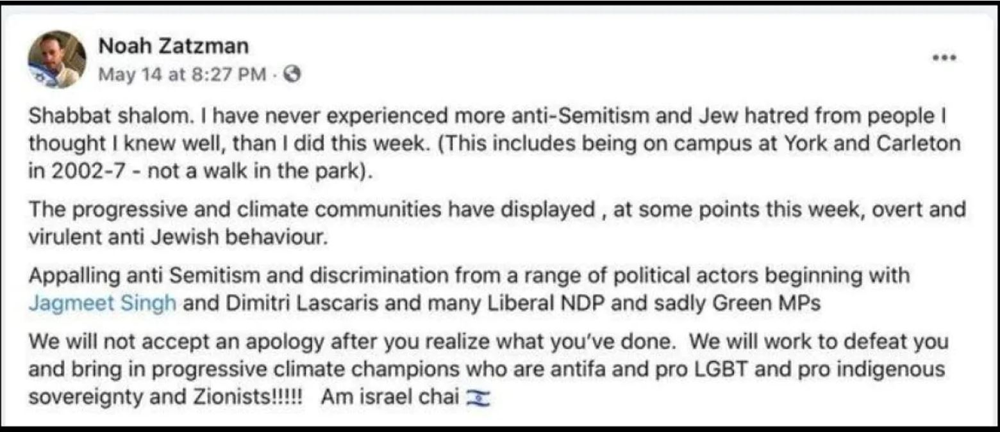
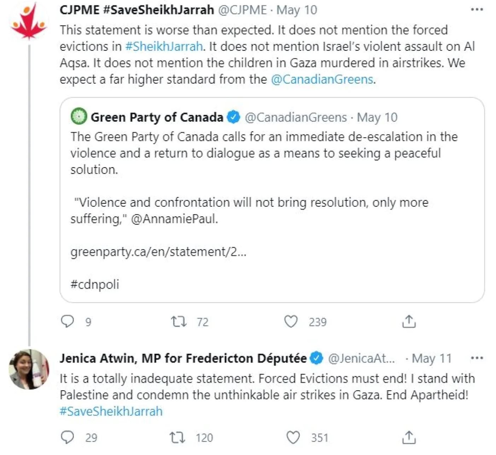

In May 2021 Noah Zatzman, senior advisor to Green Party Leader Annamie Paul released the following on his social media.
Noah Zatzmans controversial Facebook post (Facebook)
Most alarming was the following:
“We will not accept an apology after you realize what you’ve done. We will work to defeat you and bring in progressive climate champions who are antifa and pro LGBT and pro indigenous sovereignty and Zionists!!!!!”.
This last part of Zatzman’s post was of specific concern to the Green Party. Perceived as a promise to defeat the party’s own MPs after two Green MPs had publicly spoken about the conflict just days earlier. Following these comments by Zatzman the Green Party’s Federal Committee asked Annamie Paul to distance herself from and condemn Zatzmans comments, which she did not do. Not supporting her own MPs or condemning Zatzman’s comments. Zatzman posted this during a contentious time in Annamie Paul's term as Green Leader when two Green members of parliament (MPs) Jenica Atwin and Paul Manly were speaking out about the Israel-Palestine conflict.
On May 10th, 2021, MP Manly tweeted that Palestinian removal from the neighborhood of Sheikh Jarrah was “ethnic cleansing”. Manly also responded to Zatzmans May 14th post stating the following:
"I think using accusations of antisemitism to shut down legitimate criticism of human rights abuses is offensive and dangerous, and it dilutes the weight that word carries when it's used to identify real antisemitism."
In addition, on May 11th, 2021, MP Atwin tweeted the following in regard to the Canadians for Justice and Peace in the Middle East response to the Green Party and Leader Annamie Paul's statement on the issue:
MP Jenica Atwin’s response to party leader Annamie Paul's statement on the conflict (Twitter)
Paul's comments on the matter were seen as not being in line with the Green Party’s existing stance on the issue. Atwin opposed Paul's stance on the conflict, stating that Paul's comments were “totally inadequate”. Atwin crossed the floor to join the Liberal Party on June 10th, when asked whether division over the Israel-Palestine conflict played a role in her departure she stated, “It certainly played a role”. After Atwins departure Green Party MP Manly, and MP Elizabeth May released a statement saying that “Unfortunately, the attack against Ms. Atwin by the Green Party leader's chief spokesperson on May 14th created the conditions that led to this crisis," clearly stating that Mr. Zatzmans attack on the Green Party's own members played a major role in MP Atwin crossing the aisle.
This controversy with Noah Zatzman and the aforementioned MPs clearly signalled the divide within the Green Party between Annamie Paul, the Green Party Federal Committee, and other Green MPs. With the federal committee going so far as to set a vote of no confidence over Paul's leadership on July 20th, 2021, right before the fall federal election. This vote was cancelled just 2 days before it was set to take place after Paul took the party to arbitration proceedings. Importantly, the growing division in the party and controversy around Annamie Paul as leader does not boil down to just this particular conflict. An article written by former Green leader and MP Elizabeth May published October 3rd, 2021, sheds more light on the situation. May's article outlines how Paul regarded her position from the very start of her tenure as leader, and some of the lesser known actions taken by Paul after the Greens failed fall election run.
The Green Party lost 1 of their 3 seats in the 2021 fall election and dropped from holding 6.5% of the national vote to 2.3%. After this “Terrible election result” May felt the need to speak out about the leadership situation. Within her article she outlines how Paul’s views clashed with the party ideology from the very beginning. Traditionally the Green Party has treated the leadership position as one without any major power within the party. May says that Paul seemed to disagree with this idea, stating that Paul thought she would have a “CEO/Chair” position, like that in an “American business model” a completely opposite view from that of the party. This was a clear point of contention between Paul and the party, usually the Greens leadership position is devoid of many aspects of the more traditional party leader position. For example, the leader can not set policy, and solely represents the policies of party members. However, when elected as leader, Paul demanded a level of authority no leader was given before. Paul insisted on being allowed to choose the party campaign manager, made key decisions behind closed doors, and maintained an absolute authoritarian style hold over the party's public communication. Paul also did not carry out some of the duties expected of the Green leader, like appointing deputy leaders and preparing a shadow cabinet. May says the snowballing of all of these leadership issues strained the relationship between Paul and the Greens Federal Committee.
According to MP May’s article, the controversy does not end here. May says that while Paul publicly resigned as leader on September 28th, she told the federal council that she had not resigned, still maintaining control over the party's public communications. During this time May says she was told by Paul's staff to remain quiet. May states that she decided to speak out when Paul, still under control of party communication, refused to release news about the appointment of Lorraine Rekmans, a member of Canada’s Indigenous community as president of the Green Party Executive Council. Paul also went on to prevent President Rekmans from releasing a public statement on Canada’s first ever National Day of Truth and Reconciliation.
We now come to the present day, where Annamie Paul is still involved in “exit negotiations” with the party after publicly resigning on September 28th. Her lawyers are negotiating with the party over monetary compensation in regard to the money spent by Paul when fighting the initial leadership review in July. The party just recently called for a second leadership review in which general members of the Party get to voice their support or opposition to Paul as leader, this review will conclude November 25th.
This is but a brief and cursory summary of the Green Party's past few months dealing with Annamie Paul. The very fact that such intimate details regarding the party’s affairs and relationship with the leader are public is very telling of its current state. What is clear from the past few months is that many of the decisions made by Paul as leader seemed to favour her own wellbeing, policies, and goals, over those of the party she is meant to represent.
The appointment of Annamie Paul as leader has seen the Green Party devolve into chaos. From fundamental differences in regard to what the Green leadership position is, to inexplicably bad decisions on the part of Paul, in the last few months and in this last federal election we have seen the party lose much of the national presence and support it once held. This is nothing but bad news for all Canadians. Whether you support the Green party or not, its existence as a party squarely focused on protecting our environment is crucial to maintaining an adequate level of pressure regarding environmental protection policy on all of Canada’s political parties. It will be most interesting to see how, when, and if the party is able to recover from its recent controversy, and who will be the right individual to guide this resurgence.